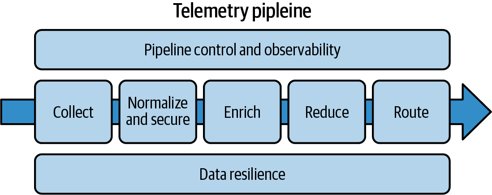
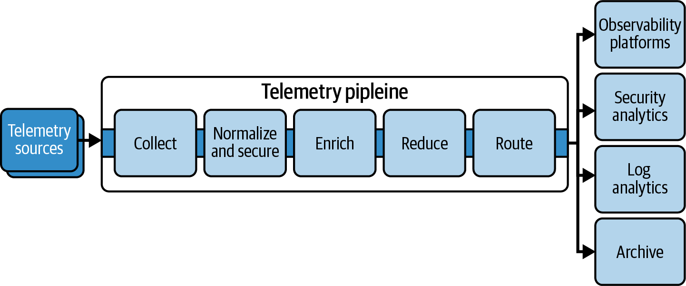
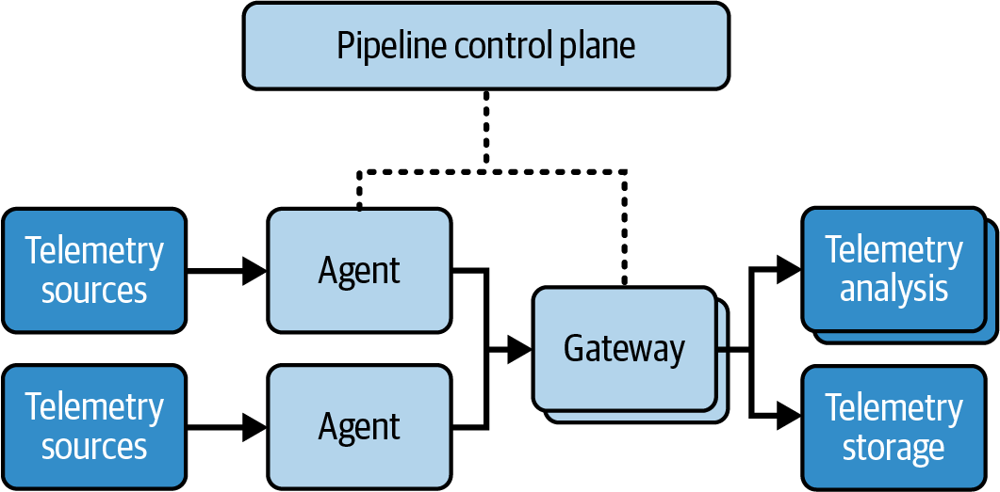
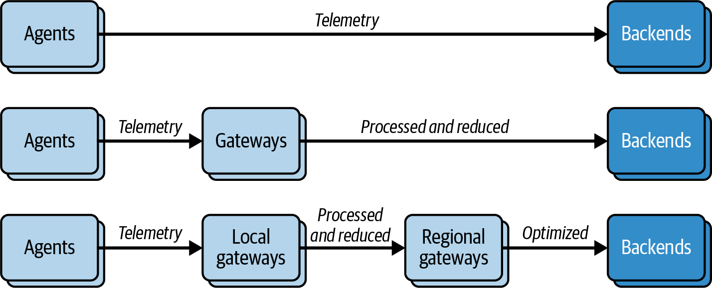
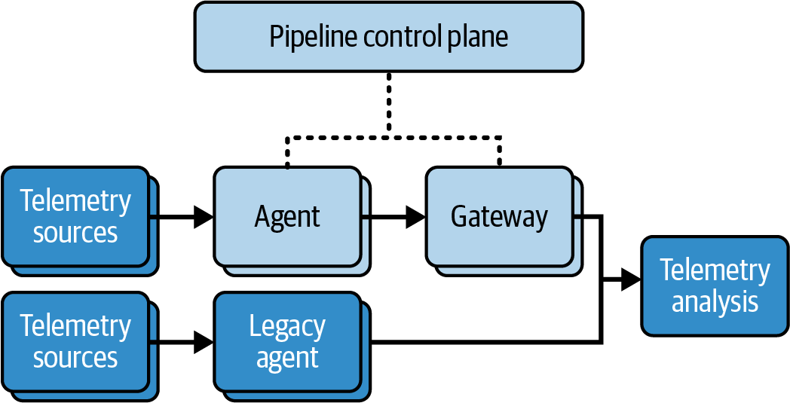
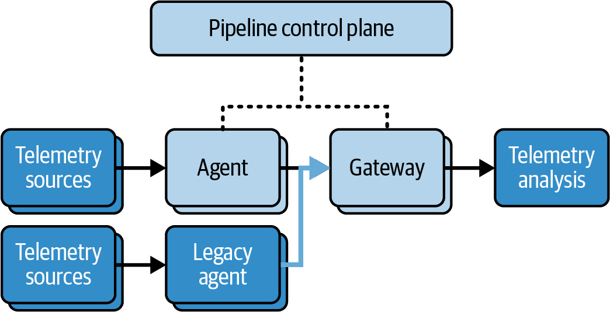
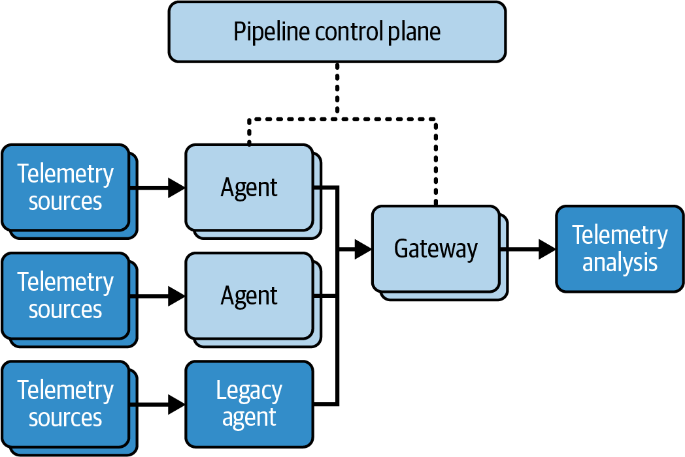

<title>第 16 章　利用流水線進行遙測管理 — 《可觀測性工程》第二版</title>
<link rel="stylesheet" href="style.css">

<nav class="chapnav">
    <a href="ch15.html">← 上一章</a>
    <a href="index.html">目錄</a>
    <a href="ch17.html">下一章 →</a>
  </nav>
<main>
  <header class="masthead">
    <span class="eyebrow">Observability Engineering · Second Edition</span>
    
    <h1 class="title serif">第 16 章<br>利用流水線進行遙測管理</h1>
    <div class="rule"></div>
  </header>

  <h2 class="section serif">本章由 Mike Kelly 撰寫，Bindplane 創辦人暨執行長</h2>
<h3 class="subsection">來自 Charity、Liz、George 與 Austin 的說明</h3>
<p>在前一章，我們探討了在來源端減少遙測資料量氾濫的策略。本章我們將探討另一種管理大量遙測資料的方式：流水線。</p>
<p>遙測流水線可以協助處理各種複雜情境，而不只是管理資料量。在較簡單的系統中，應用程式的遙測資料可以直接傳送到可觀測性後端。而在較複雜的系統中，你可能需要將遙測資料路由到多個後端，以便隔離工作負載、滿足安全與合規需求、符合不同的保留要求，或基於其他各種原因。</p>
<p>當你再把資料量納入考量時，管理遙測資料產生者與消費者之間多對多的關係，可能會變得極其複雜。遙測流水線能協助你將這種複雜性抽象化。</p>
<p>在本章中，Mike Kelly 將透過 Bindplane 這個以 OTel 標準打造的遙測流水線，詳細說明遙測流水線的運作原理、使用案例與採用模式。Mike 是Bindplane 背後公司的執行長。我們很榮幸能在本書中與各位分享他的觀點。</p>
<p>本章其餘內容以 Mike Kelly 的第一人稱視角敘述。</p>
<h2 class="section serif">遙測流水線簡介</h2>
<p>如果你曾在可觀測性領域工作過，一定熟悉這項挑戰：現代系統會產生大量令人難以招架的遙測資料。每一個訊號似乎都很重要（真的是這樣嗎？）。每一個新的叢集、新服務、新應用程式，甚至舊系統的擴充，都讓這項挑戰更加複雜。可觀測性、資安、法規遵循以及 AI 都渴求資料，即使你知道哪些資料可以刪減，要在企業規模下落實這件事，仍會迅速壓垮即使是準備最充分的團隊。</p>
<p>這正是許多組織在其可觀測性實務逐漸成熟時所面臨的現實。當我們創立Bindplane 時，這項挑戰甚至還沒有一個名稱，更別說有明確的解決方案了。當時 OTel 還處於萌芽階段，「遙測流水線」這個詞彙也尚未出現。開始遇到這個瓶頸的可觀測性團隊，紛紛在尋找快速解方，或是自行設計系統，結果好壞參半。那是一種用臨時修補和拼湊出來的流水線來堵住缺口、試圖阻擋洪流的做法。</p>
<p>在我們早期，我們打造了一套我們稱之為「監控整合即服務」的東西。事後回想，這個描述其實只是反映出這個領域當時有多麼早期。然而在當時，我們缺乏一套詞彙來討論這項挑戰與解決方案。更重要的是，這樣的說法沒有切中要點：客戶與平台反映，光是「把資料弄進來」就已經太困難了。你要如何從每一台設備收集每一個訊號，同時還要在一個以簡單和規模為設計目標的平台上完成這件事？這是我們最初聚焦要解決的問題，但在解決的過程中，卻放大了另一個我們尚未意識到的並行挑戰。你可以檢測並收集每一筆追蹤、日誌、事件與指標，這下你的團隊很開心，你的可觀測性平台也擁有它所需要的一切。但這份寬慰維持不了多久，很快就會演變成財務長提出的難題，加上一支疲於應付這些資料所帶來新規模問題的基礎架構團隊。</p>
<p>這是典型的擴展性問題。你讓它能夠擴展，結果卻揭露出一整批新的挑戰。在可觀測性領域，資料量的爆炸性成長，以及這些資料新用途的出現，使得舊有做法變得難以為繼。要在規模化下管理遙測資料，其成本與複雜度都要求有新的解決方案。如果你正感受到這股壓力，你並不孤單。而這正是遙測流水線登場的地方。</p>
<h2 class="section serif">遙測流水線解決方案</h2>
<p>解決方案始於認清問題所在。問題不只是資料太多，而是資料流本身從來沒有被當作一個獨立的關注點來處理。與其讓每個應用程式各自決定遙測資料該送往何處，遙測流水線應該成為骨幹，負責收集、正規化、處理並將訊號路由到所有需要它們的地方。</p>
<p>以電網為例。若將每個電器都直接連接發電廠，將既脆弱又缺乏效率。這個問題可透過變電站、路由與冗餘來解決。對消費者而言，所需的只是插頭與插座，其餘的傳輸都在背後處理完成。遙測流水線的運作方式也是如此。</p>
<p>所有現代遙測流水線都具備幾項核心功能：</p>
<p>• 從任何發送遙測資料的來源收集訊號。 •</p>
<p>• 將資料標準化並保護成統一模型，同時強制執行合規要求。 •</p>
<p>• 為遙測資料附加情境資訊，使其可付諸行動。 •</p>
<p>• 透過過濾、聚合與取樣來降低資料量。 •</p>
<p>• 將正確的遙測資料路由到正確的工具：可觀測性、安全性、分析， •  及／或長期儲存。</p>
<p>這些功能確保遙測流水線能夠管理日誌、指標、追蹤或任何其他訊號的端到端傳遞。</p>
<h3 class="subsection">為何此事現在如此重要</h3>
<p>由於兩項基本原則──成本與標準化，流水線的採用正呈指數成長。將所有資料送往所有地方已不再具有可持續性，而 OTel 已成為與供應商無關的標準。透過其 Collector 與函式庫，團隊可以建立靈活的流水線，並獲得所有主要可觀測性與安全性供應商的支援。</p>
<p>成本與標準化已使遙測流水線成為現代基礎架構的基石。有了流水線之後，你可以：</p>
<p>• 新增可觀測性工具，而無需碰觸應用程式程式碼。 •</p>
<p>• 從中央位置在整個公司範圍內強制執行合規規則。 •</p>
<p>• 在多個領域（例如可觀測性、安全性、人工智慧與機器學習，或商業智慧） • 重複使用相同的遙測資料。</p>
<p>整體而言，架構完善的流水線能將遙測資料從一個擴展性問題轉變為一項資產。</p>
<h2 class="section serif">現代遙測流水線的核心功能</h2>
<p>在前一節中，我概述了遙測流水線的核心功能。現在，讓我們更深入一層。與其將流水線視為一堆零散元件的拼湊，不如將遙測流水線想像成一連串階段：收集 → 標準化 → 豐富 → 精簡 → 路由。所有這些階段都由兩項關鍵需求所支撐：資料韌性，以及流水線的控制與可觀測性，如圖 16‑1 所示。</p>
<figure class="plate">
<figcaption>圖 16‑1　現代遙測流水線的核心功能。</figcaption></figure>
<p>在本節中，我將說明每個階段、它為何重要，以及 OTel 如何實現這些功能。</p>
<h2 class="section serif">收集</h2>
<p>對大多數可觀測性從業者而言，遙測收集是第一個也是最重要的步驟。應用程式、基礎設施和裝置都會發出日誌、指標、追蹤和事件。遙測流水線必須收集所有重要的訊號，從傳統系統、雲端供應商到現代微服務和全新部署皆然。若缺乏可靠的收集機制，決策就會建立在不完整的遙測資料之上。遙測收集能確保你擁有排除故障、確保安全及優化系統所需的完整脈絡。</p>
<p>OTel 已成為收集的標準。它是開源且供應商中立的，獲得業界廣泛支援，並能透過單一收集器收集日誌、指標和追蹤。它對新舊技術都有廣泛支援，OTel 專案中有超過 100 種接收器（receiver），包括 OpenTelemetry Protocol（OTLP）、Prometheus、StatsD、Java Management Extensions（JMX）和主機指標等通用選項。這種支援深度與彈性，使 OTel 成為建構遙測流水線的理想基礎元件。</p>
<p>擺脫專有代理程式與 SDK 至關重要。只要收集機制直接綁定單一目的地，你就永遠無法達成流水線所帶來的可重複使用性與標準化。</p>
<h2 class="section serif">正規化與安全</h2>
<p>遙測正規化與安全是下一個步驟。原始遙測資料是雜亂的，此階段的目的是使其變得結構化、一致且合規。這是透過以下方式完成的：</p>
<dl class="deflist"><dt>解析與型別轉換</dt><dd>將非結構化日誌轉換為結構化事件、修正時間戳記，並強制執行綱要（schema）。</dd><dt>正規化</dt><dd>將混合格式（例如 JSON 日誌或 Zipkin 追蹤）轉換為共通模型，例如OTLP。這為後續處理準備好各種訊號。</dd><dt>安全與治理</dt><dd>編修個人識別資訊（PII），並套用資料存取、保留與資料落地控制，以管理合規要求——例如一般資料保護規則（GDPR）、聯邦風險與授權管理計畫（FedRAMP）。</dd></dl>
<p>及早正規化能確保後續所有資料乾淨、可用且合規，減少流水線後段的重工與風險。</p>
<h3 class="subsection">豐富化</h3>
<p>遙測豐富化會加入讓遙測資料有意義的脈絡。原始訊號會透過中繼資料、業務脈絡與外部查找來增強。豐富化包括：</p>
<dl class="deflist"><dt>基礎設施脈絡</dt><dd>附加如 Kubernetes pod、節點、地區或可用區等細節。</dd><dt>業務背景</dt><dd>業務脈絡</dd><dt>外部查找</dt><dd>將 IP 解析為地理位置，或將 DNS 對應到主機名稱。</dd></dl>
<p>及早豐富化能讓遙測資料立即可供行動使用，並縮短偵測時間。（更多遙測豐富化的範例請見第 6 章。）</p>
<h2 class="section serif">縮減</h2>
<p>遙測縮減，也就是縮減整體資料量，是各團隊採用流水線的最大原因之一。它有助於控制成本，並維持較高的信噪比。現代系統產生的資料量，遠超過大多數團隊所能合理處理的範圍，而低價值的遙測資料很容易淹沒最重要的資料。</p>
<p>整體遙測量可以透過以下方式縮減：</p>
<dl class="deflist"><dt>過濾</dt><dd>捨棄低價值的日誌、冗餘的指標或瑣碎的追蹤。</dd><dt>去重複</dt><dd>整合重複項目，同時不失去可視性。</dd><dt>彙總</dt><dd>將指標或事件彙整為更高層級的視圖。</dd><dt>取樣</dt><dd>對雜訊較多的來源套用前段、尾部或自適應取樣。</dd></dl>
<p>集中式縮減能在去除浪費與雜訊的同時保留可見性，讓你能隨著需求變化即時調整縮減策略。</p>
<h2 class="section serif">路由</h2>
<p>將遙測資料路由到多個目的地，正是流水線價值展現之處。一旦訊號經過標準化、豐富化與縮減，就能作為多種用途使用。路由主要有兩種使用情境：</p>
<dl class="deflist"><dt>扇出</dt><dd>將日誌傳送到安全資訊與事件管理（SIEM）系統、指標傳送到 APM、事件傳送到分析平台，並將高保真副本存放到雲端儲存以符合合規要求，如圖16‑2 所示。</dd></dl>
<figure class="plate">
<figcaption>圖 16‑2：遙測資料路由到多個目的地——可觀測性平台、安全分析、日誌分析與封存。</figcaption></figure>
<dl class="deflist"><dt>彈性</dt><dd>無需異動應用程式程式碼或重新檢測系統，即可新增或測試新工具。</dd></dl>
<p>路由能將單一乾淨的資料流轉化為可觀測性、安全、合規與 AI 的燃料，且不會產生重複。</p>
<h2 class="section serif">資料韌性</h2>
<p>資料韌性確保在系統故障時遙測資料仍能持續流動。後端可能中斷、網路可能突增流量、資料量可能暴增。具韌性的流水線能吸收這些衝擊並</p>
<p>確保即使系統部分出現異常，遙測資料仍能可靠傳遞。這種韌性可透過以下方式達成：</p>
<dl class="deflist"><dt>緩衝與持久性</dt><dd>在流水線各階段設置暫時且可調整的緩衝區，並可選擇搭配磁碟持久性以防止資料遺失</dd><dt>重試與流量控制</dt><dd>採用指數退避的重試邏輯控制，並搭配背壓機制，以避免「驚群效應」或級聯故障影響下游消費者</dd><dt>高可用性與容錯移轉</dt><dd>備援的代理程式、閘道與控制平面，可在節點或區域失效時提供服務連續性</dd></dl>
<p>舉例來說，在 Bindplane 中，韌性在大規模場景下至關重要。我們的收集器與閘道會在本地緩衝遙測資料、排隊等候傳送，並在後端無法使用時支援容錯移轉路徑。這能防止在中斷期間出現可觀測性資料缺口，並協助團隊維持對其遙測資料的信任。</p>
<h2 class="section serif">流水線控制與可觀測性</h2>
<p>即使是最好的流水線，若缺乏管理與可視性也會失效。流水線並非「設定好就不用管」。它們需要被監控、調校與治理。控制平面讓這一切成為可能，提供了讓流水線在大規模運作下維持可行性所需的能力。所有遙測流水線都應包含：</p>
<dl class="deflist"><dt>即時可視性</dt><dd>儀表板與指標可顯示整個流水線的吞吐量、錯誤率與延遲。</dd><dt>政策執行</dt><dd>集中式控制可一致地套用合規規則、保留設定與資料處理政策。</dd><dt>組態管理</dt><dd>流水線必須可在執行期間調整，以便快速推出變更、更新目的地或調整縮減策略。</dd><dt>事件應變</dt><dd>遙測控制平面讓在事件發生期間能夠重新載入歷史資料、重新導向資料流，或隔離故障元件成為可能。</dd><dt>機群管理</dt><dd>諸如 Open Agent Management Protocol（OpAMP）等標準協定，定義了收集器如何回報健康狀態、擷取組態並接收更新。像 Bindplane 這樣的工具便以此為基礎，加入企業級功能，例如</dd></dl>
<p>版本化推出、遠端升級、故障轉移處理，以及歷史資料的重新載入。</p>
<p>這一層控制正是流水線的價值所在。它讓你能夠管理機群、預覽變更並保持環境一致，讓你能在大規模下真正做到簡化與標準化。</p>
<h2 class="section serif">關於核心功能你應該記住的事</h2>
<p>現代化的遙測流水線是由一系列核心功能所構成，這些功能協同運作，把原始信號轉化為受治理、可重複使用的資料串流。每個階段都建立在前一階段之上。收集、正規化、豐富化、精簡、路由，以及確保韌性與控制，共同構成現代化遙測流水線的骨幹。</p>
<p>當這些功能協調運作時，遙測便從難以駕馭的資料洪流轉變為驅動可觀測性、安全性、合規性與創新的策略性資產。這個基礎為接下來我要帶你了解的架構與導入策略鋪路。</p>
<h2 class="section serif">流水線架構實務</h2>
<p>到目前為止，你已經了解了遙測流水線的核心功能。架構正是這些功能在實務上匯聚的地方。你如何部署這些元件，決定了可擴展性、韌性與可管理性。把架構做對，你就能從小規模開始，擴展到數千個收集器而不失去控制。</p>
<h2 class="section serif">核心元件</h2>
<p>任何遙測流水線的核心都由三類元件組成：</p>
<p>代理程式（Agents）這些是部署在主機、容器上或作為側車（sidecar）的輕量級 OTel Collector。它們盡可能靠近來源擷取遙測資料，並將額外負擔降到最低。</p>
<p>閘道器（Gateways）這些是集中化、可擴展的節點，負責彙整來自代理程式的資料、套用處理與合規規則、減少資料量，並將信號路由至目的地。它們通常以叢集方式部署，以確保韌性與吞吐量。</p>
<p>控制平面（Control plane）這是讓流水線在大規模下具備營運可行性的管理層。在 Bindplane 中，這正是你跨機群設定、視覺化並更新收集器與閘道器的地方。</p>
<p>這些類別如圖 16‑3 所示。</p>
<figure class="plate">
<figcaption>圖 16‑3。核心流水線元件——代理程式、閘道器，以及提供編排與設定功能的集中式控制平面。</figcaption></figure>
<p>Bindplane 中另一個必要的核心元件是 OTel Collector。遙測收集器是大多數現代流水線的基礎。OTel Collector 採用可插拔式架構，包括：</p>
<p>接收器（Receivers）用於擷取資料（HTTP、gRPC、Kafka、Syslog 等）</p>
<p>處理器（Processors）用於執行標準化、豐富化、取樣與批次處理等轉換作業</p>
<p>匯出器（Exporters）用於將資料傳送至後端（Prometheus、Elasticsearch、Datadog）</p>
<p>擴充套件（Extensions）用於執行 zPages、健康檢查、身分驗證等跨領域功能</p>
<p>單一二進位檔可以扮演多種角色，這正是其彈性所在：</p>
<p>代理程式（Agent）在工作負載附近運行，執行最基本的處理，並將遙測資料轉發至閘道器。這使邊緣的佔用量維持輕量，並降低對本地系統的影響。</p>
<p>閘道器（Gateway）以具韌性、負載平衡的叢集形式運行。閘道器在專用節點上處理繁重的工作，例如資料精簡、合規、路由、緩衝與佇列管理，而不會干擾工作負載。</p>
<h2 class="section serif">部署模式</h2>
<p>核心元件如何組合，取決於組織的規模與需求。圖 16‑4 展示了一些範例。</p>
<figure class="plate">
<figcaption>圖 16‑4。常見的擴展模式──僅代理程式、代理程式 + 閘道，以及多層全域架構，用於實現高可用性與成本效益。</figcaption></figure>
<p>這些元件的靈活性意味著它們可以用各種方式組合，以適應不同組織的使用案例。最常見的配置包括：</p>
<dl class="deflist"><dt>僅代理程式</dt><dd>這是最簡單的方式。每個代理程式將遙測資料直接傳送到一個或多個後端。此方式在小型環境中可行，但無法擴展，且會在來源與目的地之間造成緊密耦合。</dd><dt>代理程式 + 閘道</dt><dd>這是最常見的生產環境模式。代理程式將遙測資料轉送到閘道，由閘道集中處理、精簡並路由。此方式將收集與傳遞解耦，並在單一位置建立合規性與控制機制。</dd><dt>多層拓撲</dt><dd>此模式支援大型分散式組織的需求。本地閘道在將優化後的訊號轉送到區域閘道之前，先處理本地收集、精簡與合規性事項。這能在規模化的情況下實現高可用性、災難復原與成本效益。</dd></dl>
<h2 class="section serif">實務中的擴展與性能</h2>
<p>在 Bindplane，我們與每天處理數 PB 遙測資料的客戶合作，這些資料橫跨數十萬個以代理程式與閘道形式運行的 OTel collector。要在這種規模下實現性能與韌性，需要仔細規劃，但只要採用正確的模式，就能避免常見的陷阱，例如：</p>
<p>代理程式（Agents）代理程式應保持輕量化。僅套用最少的處理，設定明確的記憶體與 CPU 限制，並僅使用小型本地緩衝區來處理短暫的資料突發。它們的主要角色是可靠地將資料轉送到閘道層，而不影響本地工作負載。</p>
<p>閘道器（Gateways）閘道承擔了主要負載。應水平擴展閘道，加入冗餘與負載平衡以消除單點故障，並使用緩衝與佇列來吸收突發流量。健康檢查應追蹤佇列深度、延遲與錯誤率，以便及早發現問題。</p>
<p>一致地落實這些做法，能讓流水線在不遺失資料或降低效能的情況下處理龐大的吞吐量。</p>
<h2 class="section serif">自己建立與購買的考量</h2>
<p>組織面臨一個關鍵決策：自行建立並運作流水線，或利用供應商的解決方案。在處理這個決策時，主要有三種方法可以考慮，而你決定採用哪種方法，取決於哪種權衡最適合你的需求，如表 16‑1 所示。</p>
<p>表 16‑1：自己建立與購買的三種主要方法比較</p>
<p>方法 描述 優勢 挑戰 最適合對象 開源／自行開發</p>
<p>使用開源工具自行建立並運作所有流水線元件。</p>
<p>最大彈性 每個元件皆可完全客製化 無廠商鎖定</p>
<p>營運負擔沉重 需要深厚的內部專業知識 擴展、升級與合規會變成全職工作</p>
<p>具備強大工程能力且需求複雜客製化的團隊</p>
<p>供應商支援</p>
<p>採用商業解決方案，開箱即用提供企業級的流水線功能。</p>
<p>降低營運負擔更快實現價值開箱即用提供企業級功能</p>
<p>彈性可能受限 可能出現廠商鎖定持續的授權成本</p>
<p>重視速度與低營運負擔勝過客製化的團隊</p>
<p>混合式 採用開放標準（例如OTel、OpAMP）建構流水線，同時使用商業控制平面（例如 Bindplane）進行機群管理。</p>
<p>降低營運負擔更快實現價值包含機群管理、治理與成本控制 廠商中立</p>
<p>架構較為複雜 需要同時理解開源與商業工具</p>
<p>希望兼具開放標準與企業級可靠性的組織；此做法日益普遍</p>
<p>最終，自己建立或購買的決策取決於多項組織因素。關於如何決定自己建立或購買，詳見第 29 章。</p>
<h2 class="section serif">關於流水線架構你應該記住的事</h2>
<p>流水線架構是一種演進過程。最聰明的做法是從代理程式加閘道器模式開始，讓你從第一天就建立最佳實踐，並能在不需要重工的情況下擴展。接下來，加入控制平面，以一致的方式管理和治理你的機群。隨著需求成長，再進一步邁向多層級區域架構，在規模化的同時獲得韌性、合規性與成本控制。</p>
<p>可以參考 Bindplane 作為參考實作，展示這一切如何整合起來：OTel 提供建構區塊，OpAMP 帶來標準化管理，而 Bindplane 則讓一切在企業規模下可運作。</p>
<h2 class="section serif">採用與遷移</h2>
<p>很少有公司是從一片乾淨的全新環境（greenfield）開始思考流水線架構要放在哪裡、如何最佳運用。更常見的情況是，流水線是被引入既有的棕地（brownfield）遙測架構之中。當你開始考慮加入遙測流水線時，你可能早已有數百條串流跑在專有代理程式上。挑戰在於如何將其調整為理想的流水線架構。</p>
<p>在本節中，我們將探討一種分階段的策略，把遙測流水線引入既有的應用程式架構中。</p>
<p>你很少需要重新檢測整個環境，才能獲得遙測流水線帶來的好處。</p>
<h2 class="section serif">分階段的採用之路</h2>
<p>在 Bindplane，我們引導客戶採取分階段的方式來建立遙測流水線：</p>
<p>1. 從全新環境（greenfield）應用程式開始。2. 以 OTel 標準建立最佳實踐並實現未來可擴展性。</p>
<p>3. 逐步將既有流程重新導向至新的遙測流水線。</p>
<p>分階段的做法能帶來早期成效、建立熟悉度，並透過避免破壞性的切換來降低風險。這個過程從小規模開始，然後逐步納入更多系統，直到你大部分的遙測資料都已標準化並集中管理。</p>
<p>階段 1：全新環境（Greenfield）從一個連接到單一應用程式或服務的簡單流水線開始。無論來源類型為何，這種做法都適用。目標是端對端驗證流水線，並提供一種低風險的方式，建立對新工具與實踐的信心。這通常是透過代理程式和閘道器來完成，如圖 16‑5 所示。</p>
<figure class="plate">
<figcaption>圖 16‑5。第 1 階段：在使用代理程式（agent）與閘道（gateway）並受編排（orchestration）控管的全新（greenfield）應用程式上進行初始流水線部署。</figcaption></figure>
<p>大多數組織會從檢測新的微服務或既有內部應用程式開始著手。</p>
<p>第 2 階段：重新導向既有的代理程式</p>
<p>雖然用 OTel 取代所有既有的檢測是理想做法，但這並不切實際。在無法全面取代或耗時過長的情況下，較簡便的做法是將這些遙測資料串流重新導向到遙測流水線內的閘道。</p>
<p>你將把舊有的遙測資料流轉移到流水線中，以便從集中位置管理合規性與資料縮減，如圖 16‑6 所示。</p>
<figure class="plate">
<figcaption>圖 16‑6。第 2 階段：將既有的舊有代理程式重新導向到流水線閘道，以集中管理合規性與資料縮減。</figcaption></figure>
<p>OTel 在可攝入訊號類型上的彈性，讓這成為邁向完整遙測平面過程中容易達成的漸進步驟。</p>
<h3 class="subsection">第 3 階段：取代現有代理程式</h3>
<p>在最後階段，你的大部分遙測資料都已流經此流水線，團隊也對管理它有信心。安全性與合規標準都已被一致地落實，此時正是取代舊代理程式、統一收集方式的好時機。單一的收集與管理方法能降低複雜度與額外負擔。</p>
<p>為此，在此階段你將以 OTel Collector 取代舊代理程式，如圖 16‑7 所示。</p>
<figure class="plate">
<figcaption>圖 16‑7　第 3 階段：以 OTel Collector 取代舊代理程式，以達成完全標準化與統一管理。</figcaption></figure>
<p>話雖如此，並非所有東西都值得投入這番心力。沒有人想動的脆弱舊系統，可能會無限期停留在第 2 階段，而在現代化遙測流水線的過程中，這通常是可以接受的取捨。</p>
<h2 class="section serif">關於採用與遷移，你應該記住的事</h2>
<p>對某些組織來說，尤其是擁有非常龐大或廣泛棕地應用程式架構的組織，採用新工具並遷移服務的架構元件可能是一個漫長且充滿挑戰的過程。在遷移過程中，你應牢記以下幾項最佳實務：</p>
<p>不要試圖一次做完所有事。先把心力集中在最具價值的遙測資料流上。</p>
<p>溝通取捨。</p>
<p>團隊需要理解為什麼有些系統可能會較長時間停留在舊有的檢測方式上。</p>
<p>新舊系統並行運作。</p>
<p>在轉換期間讓新舊系統重疊運作，能帶來信心，也提供回滾的退路。</p>
<p>投資於教育與文化。</p>
<p>成功的遷移不僅需要技術上的變革，還需要在團隊之間建立信任與專業能力。</p>
<p>將遙測流水線的採用視為一段旅程。如此一來，你就能避免破壞性轉換所帶來的風險，並能很快看到遙測流水線的效益。隨著時間推移，這種分階段的方式能讓你在不影響營運的情況下，逐步達成標準化、簡化與現代化。</p>
<h2 class="section serif">使用案例：收集與精簡，兩者兼具</h2>
<p>在本節中，我將總結兩個常促使組織將遙測流水線視為解決方案的使用案例：收集與精簡。我觀察到這兩者對展現價值有最大的影響。</p>
<p>大型企業往往面臨相同的挑戰：</p>
<p>• 資料過多 •</p>
<p>• 成本過高 •</p>
<p>• 營運負擔過重 •</p>
<p>在一個（尚未發表的）案例研究中，SIEM 攝入資料有 40% 從未被查詢過。數百萬美元被浪費在無人使用的訊號上。在另一個案例中，平台團隊必須管理跨裝置的 25,000 多個收集器機群，每天都在對抗組態飄移與設定錯誤。</p>
<p>解決方案是建構在 OTel 之上的遙測流水線：邊緣端的代理收集器、中間層的閘道收集器，以及用來統一管理這一切的控制平面。目標是一次收集、集中管理，並在資料進入昂貴的供應商端點之前先行處理。</p>
<p>有兩項核心功能讓這些客戶獲得成功：</p>
<p>1. 收集：Bindplane 會在整個機群中推送版本化的組態、驗證變更，並即時顯示狀態。數千個收集器得以保持同步，無需人工介入。</p>
<p>2. 精簡：此流水線能削減雜訊。捨棄高變動性欄位、合併重複資料、對雜訊過多的來源進行取樣，並遮蔽敏感資料。將關鍵訊號路由到你所選擇的遙測後端，並將其餘資料歸檔到 Google Cloud Storage 或 Amazon S3 等低成本儲存空間。</p>
<p>成本可降低 50% 或更多。有一位客戶消除了 260 萬美元的超額費用，並實現了約 200 萬美元的節省。他們的平台團隊與可觀測性團隊透過集中式管理與即時的流水線可見性，獲得了信心與可靠性。由於 PII 已被移除，且安全規則採集中式強制執行，合規性也隨之提升。因為路由與收集是解耦的，切換或新增遙測來源或目的地，變成一項設定變更，而非重新檢測的專案。</p>
<h2 class="section serif">商業案例</h2>
<p>在本章中，我一直主要聚焦於遙測流水線相較於現有解決方案的技術優勢。雖然這點很重要，但要為流水線爭取支持，也需要向掌控預算的人闡明其影響。在本節中，我們將從商業價值的角度來檢視遙測流水線。</p>
<h2 class="section serif">成本控管</h2>
<p>遙測流水線透過解決可觀測性中最大的痛點之一——擷取量——帶來直接的財務影響。大多數供應商是依據所傳送的資料量計費，這意味著無論資料是否有價值，你都得為所有資料付費。事實上，我們經常與一些團隊合作，發現他們有 20% 到 40% 的 SIEM 資料從未被查詢過。遙測流水線透過過濾、去重複與取樣解決了這個問題。更棒的是，這一切都在資料抵達昂貴的遙測儲存之前就已完成。</p>
<p>一個更大的優勢是成本可預測性。與其解釋為何上一季可觀測性支出突然暴增30%，流水線提供了資料流動及其成本驅動因素的即時可見性。這讓可觀測性從不可預測的成本，轉變為可管理、可預測的每月帳單。財務長不再質問成本為何暴增，讓團隊得以專注於提升洞察力，而非為預算辯護。</p>
<h2 class="section serif">供應商中立性</h2>
<p>建立在 OTel 之上的流水線，消除了專有代理程式與管線帶來的鎖定效應。切換工具變成一項設定變更，而非跨越多年的遷移專案。這種彈性創造了與供應商談判的籌碼，也讓組織能夠有信心採用新工具，無需擔心造成中斷。</p>
<h2 class="section serif">遙測作為戰略資產</h2>
<p>同時，流水線讓遙測從成本負擔提升為戰略資產。可以把遙測視為原物料：</p>
<p>• 可觀測性團隊用它來確保正常運行時間與性能。 •</p>
<p>• 安全團隊仰賴它進行偵測與應變。 •</p>
<p>• 合規團隊需要它來落實安全政策與法規。 •</p>
<p>若沒有流水線，各團隊就得各自重複檢測系統、重複投入資源，並向廠商支付重疊遙測的儲存費用。流水線可讓一份統一、乾淨、經過豐富化的遙測串流，分流給每個需要它的團隊與工具。</p>
<p>流水線也能降低合規與安全風險。敏感欄位可在離開你的環境之前先進行遮蔽處理，GDPR、FedRAMP 或 1996 年健康保險流通與責任法案（HIPAA）等合規要求可集中落實，而不是分散在數十種工具中各自為政。這能降低資料外洩曝險、簡化稽核，並在不依賴下游廠商的情況下確保治理的一致性。</p>
<p>其中的經濟效益十分明確：</p>
<p>• 廠商資料攝入成本可節省 50% 以上。 •</p>
<p>• 將約 10% 再投入流水線基礎設施。 •</p>
<p>• 淨節省約 40%，同時獲得更高的掌控力與廠商中立性。 •</p>
<p>隨著遙測量隨業務成長，遙測流水線能確保可觀測性成本不會超過營收成長的速度。其結果是可永續的擴展、更佳的可見性與安全性、可預測的成本，並讓遙測從頭痛問題轉變為競爭優勢。</p>
<h2 class="section serif">遙測流水線的角色</h2>
<p>遙測流水線如今已成為可觀測性工程的核心一環。它們解決了每個成長中系統都會遇到的擴展陷阱：資料太多、工具太多、掌控卻太少。透過具備韌性與治理能力的收集、正規化、豐富化、精簡與路由，流水線能把原始遙測轉化為可信賴的資產。</p>
<p>如今，遙測流水線已不再是可有可無的選項，而是讓可觀測性、安全性與合規性得以在規模化下永續運作的骨幹。當你投資於遙測流水線時，可以期待更低的成本、可預測的支出、廠商自由度，以及更強的治理能力。你的遙測確實會成為一項戰略資產。</p>
<h2 class="section serif">結論</h2>
<p>Mike 對遙測管理的完整說明既深入又具說服力。雖然遙測流水線不見得會被納入每個組織的可觀測性策略中，但幾乎所有組織都會面臨許多這套優雅解決方案所要解決的痛點。我們希望本章能讓你更了解遙測流水線可以為團隊帶來哪些幫助，以及為什麼你應該使用它們。</p>
<p>在下一章中，我們將透過探討大規模管理遙測資料的組織方法，來完成對可觀測性各個面向的技術深度探討。當你開始在各種服務、環境與團隊間擷取大量遙測資料時，使用本體論（ontology）有助於緩解多元資料中固有的語意失效問題。</p>

  <footer class="colophon">
    <span>《可觀測性工程》第二版 · 第 16 章</span>
    <span>利用流水線進行遙測管理</span>
  </footer>
</main>
